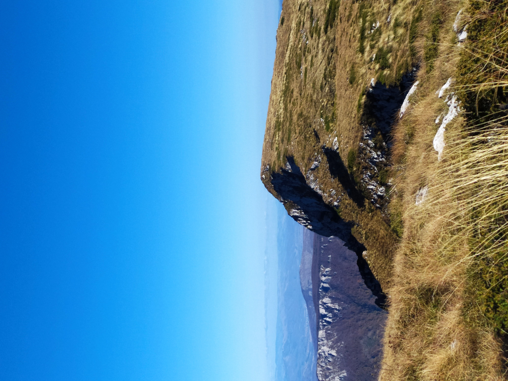

Da proverim
Trem je sa svojom visinom od 1810 metara najviši vrh Suve planine, na njenom zapadnom kraku.
Predeo oko vrha je kamenit, sastavljen od vrtača i uvala koje su na svom dnu travnate.
Trem, jedan od najviših vrhova u Srbiji važi i za najatraktivniji vrh, najviše zbog toga što severni deo krečnjačke stene koja formira vrh ima vertikalni pad od 1.000 metara.
